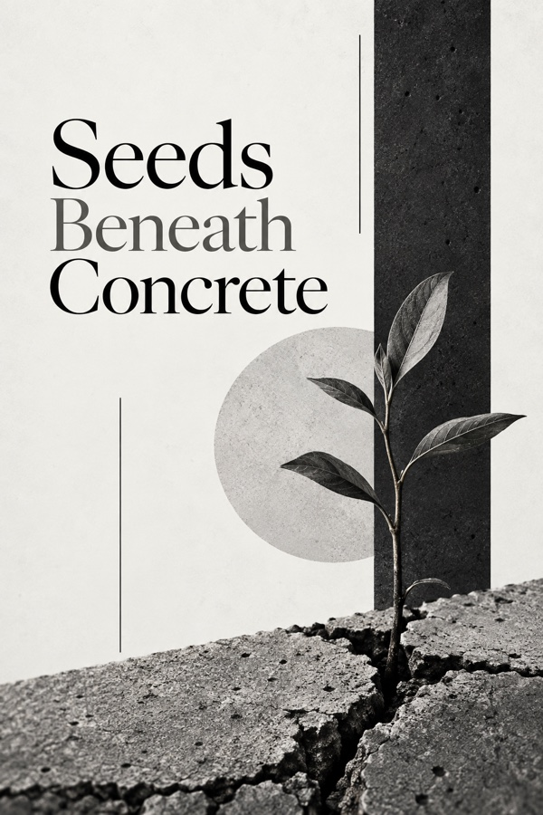
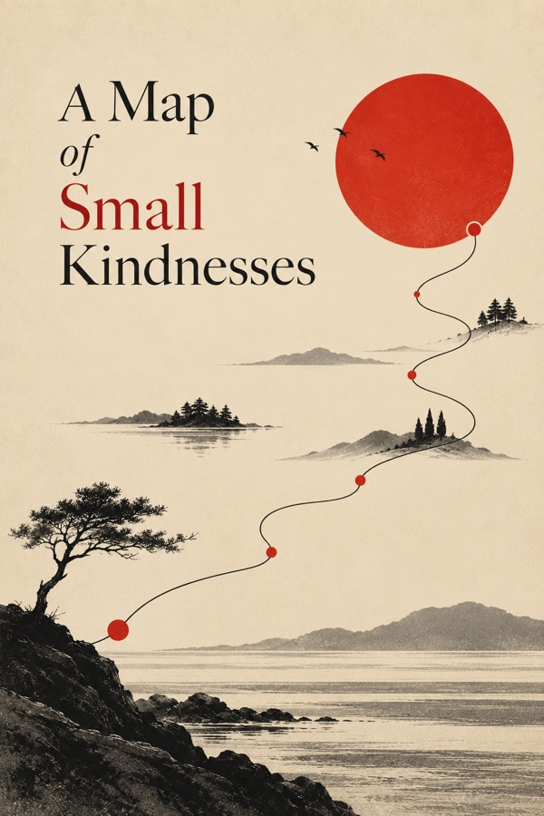
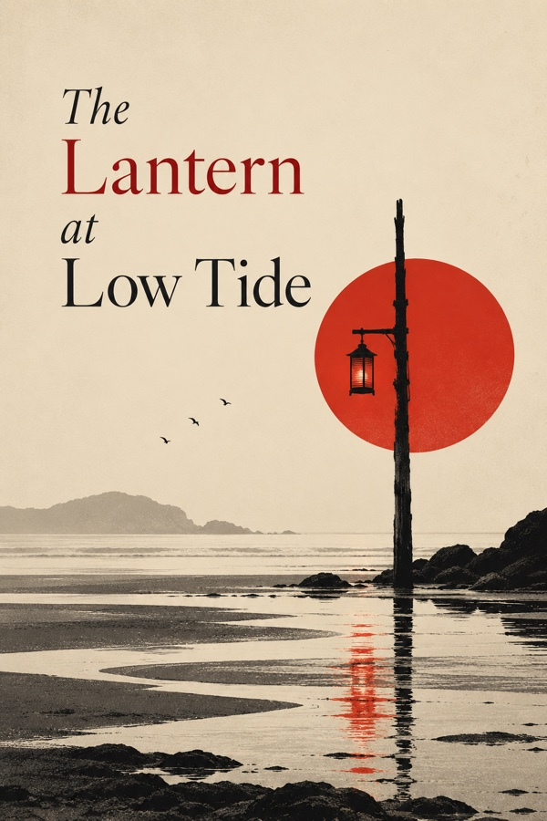
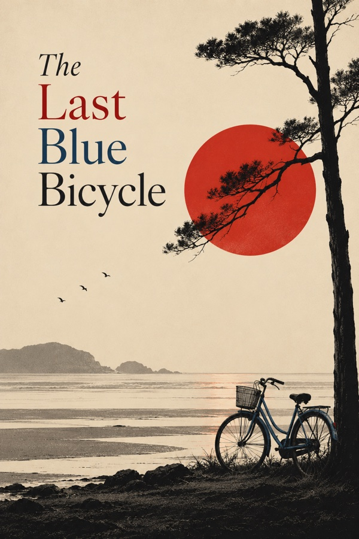
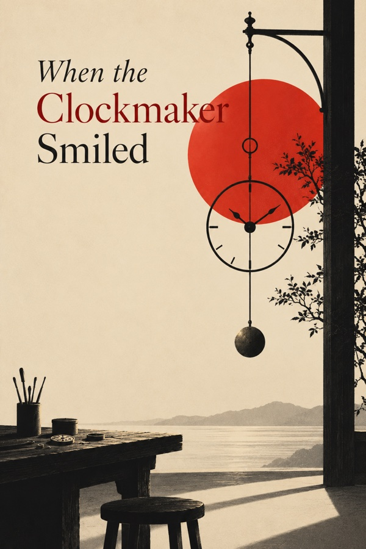
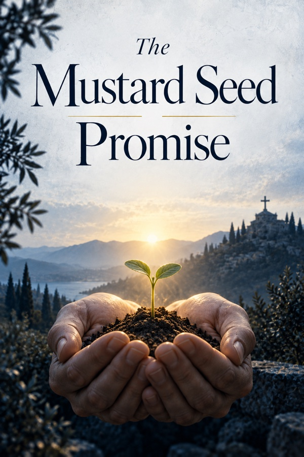

0
All checkout-route views last 24 hours
Buy a Seed to Sow for the Love You’ve Been Waiting For💓💕
Testimonies
My name is Martha, and I’m 69. I sowed my sacred number seeds with faith in my heart. In 174 days, William returned after two years of silence. Now we pray together every morning.
I’m Thomas, 72. I sowed my sacred number seeds, believing God still had someone for me. In just 3 weeks, Grace walked into my church and sat beside me. We are getting married this spring.
My name is Helen, and I’m 65. I sowed my sacred number seeds when I felt completely alone. After 16 days, my childhood sweetheart called after fifteen years apart. We are together again.
I’m Edward, 70. I sowed my sacred number seeds with tears in my eyes. In 167 days, Ruth came back into my life. Now we hold hands every Sunday in church.
My name is Patricia, and I’m 67. I sowed my sacred number seeds, praying for my relationship to be restored. After 188 days, Daniel proposed to me. Our wedding is already planned.
I’m George, 74. I sowed my sacred number seeds because I refused to give up on love. In just 4 weeks, Margaret told me she had been praying for someone like me. We have been inseparable ever since.
My name is Barbara, and I’m 63. I sowed my sacred number seeds, trusting God with my lonely heart. After 92 days, Samuel came to my door with flowers and a ring. We are engaged.
I’m Richard, 68. I sowed my sacred number seeds when I had almost lost hope. In 179 days, Elizabeth came into my life. Now we pray together every night.
My name is Nancy, and I’m 71. I sowed my sacred number seeds after years of heartbreak. Just 23 days later, the man I loved returned and apologized. We are rebuilding our future together.
I’m Charles, 66. I sowed my sacred number seeds with one prayer: to find true love again. After 104 days, Mary called and told me she had dreamed about me. Now we are planning our wedding.
My name is Linda, and I’m 70. I sowed my sacred number seeds when loneliness felt unbearable. In 183 days, Joseph asked me to marry him. I never imagined I would find love again at my age.
I’m Walter, 73. I sowed my sacred number seeds, believing my love story wasn’t over. Just 19 days later, Rose contacted me after three years of silence. Now we spend every Sunday together.
Ritual
About Sowing Your Seed
❤️ Welcome to Our Spiritual Family ❤️
A place for soulmate messages, spiritual guidance, motivation, faith, and uplifting content inspired by Jesus and Archangel Michael. 🙏✨
Our goal is to share messages that bring you hope, comfort, strength, and positivity whenever you need them.
🌱 If you genuinely enjoy our content, you may support us by sowing a seed. Your support is completely optional and helps us continue creating more spiritual videos and messages.
Please note: Seed support does not include any physical product, gift, or item in return. You are simply supporting our content and creative journey.
Thank you for being part of our spiritual family. ❤️
May Jesus guide your path and may Archangel Michael protect you always. 🙏💙✨
Christgarden EBooks
The Stories We Leave Behind
An Anthology of Ordinary Lives
A Kitchen Full of History
1+ Seed
Hands That Built the Morning
1+ Seed
Letters from the Monsoon
2+ Seeds
Midnight Radio Diaries
3+ Seeds
Notes from a Quiet Classroom
4+ Seeds
Portraits of the Night Train
5+ Seeds

Seeds Beneath Concrete
6+ Seeds
The Language of Clay
7+ Seeds
The Memory of Rivers
8+ Seeds
Thirty Steps to the Sea
9+ Seeds
Of Little Things & Passing Days
The Quiet Stories Collection

A Map of Small Kindnesses
5+ Seeds
Paper Boats in June
9+ Seeds

The Lantern at Low Tide
10+ Seeds

The Last Blue Bicycle
11+ Seeds
The Orchard After Rain
12+ Seeds
The Window Garden
13+ Seeds

When the Clockmaker Smiled
14+ Seeds
Whispers of Grace
The Faith & Promise Collection
A Prayer Between Seasons
10+ Seeds
Grace in the Waiting Room
15+ Seeds
The Chapel of Open Doors
16+ Seeds

The Mustard Seed Promise
17+ Seeds
Recent custom orders
About
🌱✨ Personalised Writing for Your Journey ✨📖
Order a writing made for your request and delivered by email...
Blessing wall
Social Portal
Payment records
Successful transactions